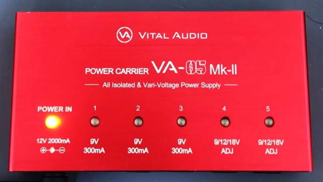
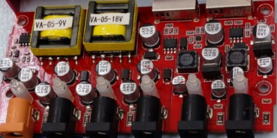
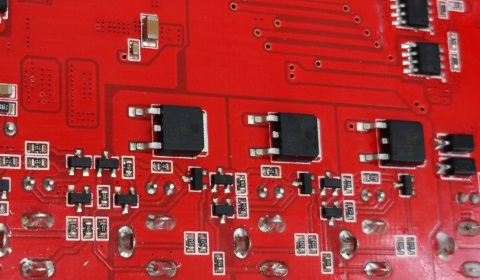
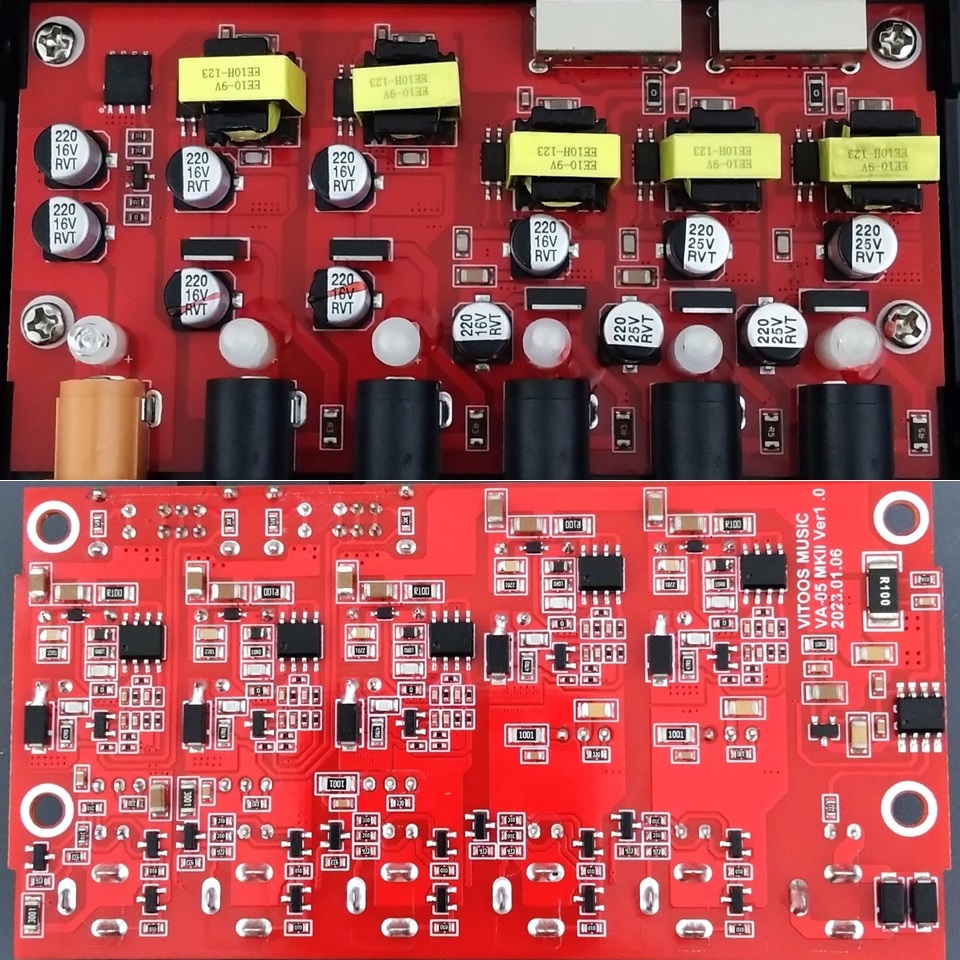
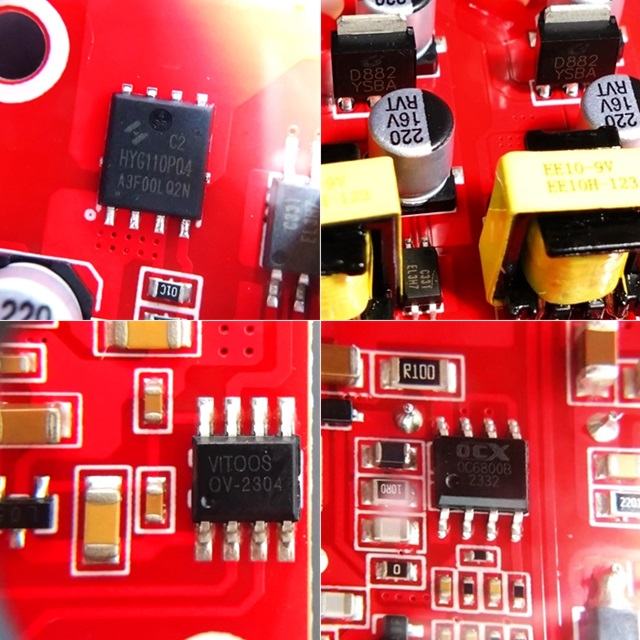
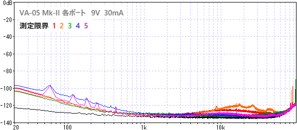
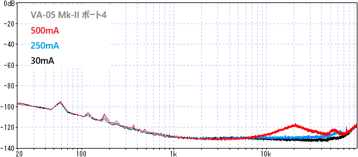
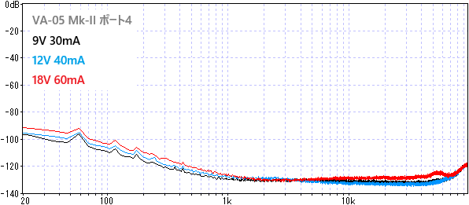

VITAL AUDIO POWER CARRIER VA-05 Mk-II 分解・測定
2024年07月20日 カテゴリー：修理・改造・解析

以前、いろいろな電源のノイズ測定やCaline CP-205の改造を行いました。今回は、割と最近（2023年6月）発売されたVITAL AUDIO POWER CARRIER VA-05 Mk-IIについてどのようになっているか調べました。
▽旧機種VA-05 ADJ 基板画像（今は手元になく低解像度写真です。）

9V固定ポートはトランス→リニアレギュレータ、可変ポートはトランス→非絶縁型DC-DCコンバータ→トランジスタのリップルフィルタという形式のようです。
▽VA-05 Mk-II 基板画像

＜主なIC＞
HYG110P04：P-Channel MOSFET
D882M：NPNトランジスタ
EL3H7：フォトトランジスタ
VITOOS OV-2304：特注IC？
OC6800B：DC-DCコンバータ
ICや基板に印字がある通り、製造はVITOOSのようです。トランスが別々になり、全てのポートが同じ回路のように見えます。DC-DCコンバータにはいろいろな回路形式がありますが、おそらくフライバック式です。Strymon Ojaiを意識してあるのではないかと思います（参考：Strymon Ojai Gut Shot Pictures）。出力部にはトランジスタのリップルフィルタがあります。
【電圧測定】
| 9V 30mA | 9V 250mA | 9V 500mA | 12V 40mA | 12V 333mA | 18V 60mA | |
| 1 | 9.16V | 8.88V | - | - | - | - |
| 2 | 9.16V | 8.89V | - | - | - | - |
| 3 | 9.18V | 8.90V | - | - | - | - |
| 4 | 9.27V | 9.04V | 8.82V | 12.40V | 12.16V | 18.54V |
| 5 | 9.26V | 9.01V | 8.80V | 12.38V | 12.14V | 18.52V |
同じ出力電流のポートであれば値はそろっており、この個体についてはカレントダブラーケーブルを使っても大丈夫でしょう。12Vや18V設定の時は少し高めの電圧が出ています。
【ノイズ測定】
以前と同様オーディオインターフェイスに接続して測定しています。

低音域のノイズは多めとなっていますが、全体としては充分低ノイズです。各ポートで微妙にノイズの差が出ており、なぜか2番ポートは消費電力が大きい機器（エアコン等）の影響を受けやすいようです。
・電流、電圧を変更した場合

電流が大きくなると、10kHz以降のノイズが増える傾向にあります。電圧を変えた場合のノイズ増加はわずかのようです。